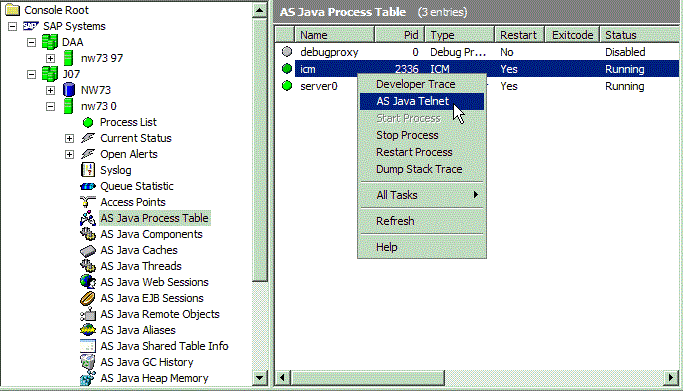
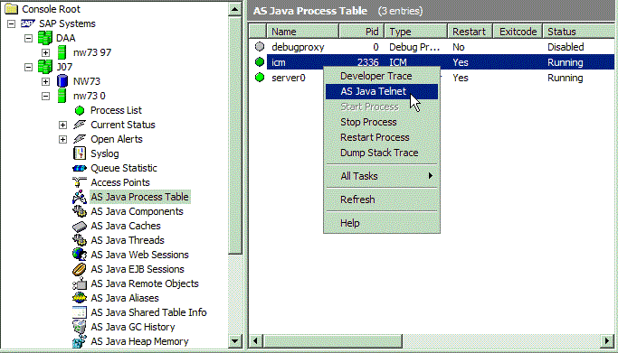

Previous Work

A little look at some of the work I did at university.
In 2014, as part of my dissertation, I built a hands free control mechanism for the cheap and open source Parrot Drone 2.0. The application uses an inexpensive infra-red/RGB camera similar to the XBox Kinect to allow the user to pilot the drone as if they are flying a plane, without a steering.
Read MoreYoutube Demonstration: https://youtu.be/BolutQBLmBs
For my final year dissertation as part of my degree in Computer Science and Mathematics, I developed a hands free method of controlling the cheap and open source Parrot Drone 2.0 Quadcopter. This was my first project in the area of computer vision and was worth a third of my grade.
The project used an Intel Perceptual Computer Senz3D camera, with similar technology to an Xbox Kinect. This combines a regular RGB camera with an infra-red camera to provide the user with a 3D mapping, using the infra-red beams to provide z coordinates. The Parrot Drone 2.0 used to demonstrate the viability of hands free drone control is a sub £300 quad rotor drone with a native C++ control library.
The idea was to have the user fly the drone with an imaginary plane yoke steering wheel as shown in the youtube video above. The user places both fists in front of the camera, and the input module tracks the centre of the hands using the Intel Perceptual library, along with a Bilateral Filter to smooth results. The centre of the hands as calculated by the module is then drawn on the screen and the user aligns these circles to the static 'start circles'. Take off and land commands are a 'thumbs up sign' and the drone is then steered like a plane in all 6 degrees of freedom. The user interface is designed to be customisable, to show the cameras rgb stream, infra-red mapping, or both. The interface also gives live readouts of yaw, pitch, roll, altitude and speed, as well as the option to view the drone's camera streams.
To Make the project as flexible as possible, I took an 'Internet of Things' approach to development and the program was split into two parts, the input and output modules. The input module is where the user inputs commands for the drone through the camera. The input module then provided these commands to the 'Bath Sensor Framework' which allows for scalability as any number of drones can listen for commands from the input module. As the commands are simple floating point direction and speed calculations, any type of drone can be easily programmed to listen for commands. To prove this flexibility I connected a remote control tank and 3 Parrot Drones to the framework simultaneously and controlled all of them.
As the Bath Sensor Framework was written in pure Java, I used a java wrapper on the Intel Perceptual C++ library, as well as the YADrone Java based Parrot Drone library to create a full application in Java. It's worth noting that due to the flexibility of the Bath Framework, both the input and output modules can be programmed in any language. To demonstrate this, I used a node js library and a Leap Motion to provide an alternative control method.

As part of an Intelligent control and cognitive systems module in final year, I built a robot from NXT lego, with the purpose of making it capable of navigating a maze autonomously. This was achieved using the LeJOS Java library and a variety of sensors including infra-red and ultrasonic. The control module was programmed using a subsumption architecture as defined by Rodney Brooks.
Read More View Coursework PaperYoutube Demonstration: https://www.youtube.com/embed/LOxWKUIRAlY
As part of my final year, I took an intelligent control and cognitive systems module, which focused on robotics, computer perception and cognition. The coursework for this required us to research various methods of artificial intelligence architecture to develop our own system to perform a task.
I used the Lego NXT robotics kit to design a robot capable of navigating a maze using best path finder logic and sensors to detect obstacles. The NXT robots come with a Java based 'LeJOS' control library, capable of building complex AI architectures to perform complex tasks. I decided to build the control module based around the subsumption architectural model first coined by Rodney brooks in the 80s. Instead of guiding behaviour by symbolic mental representations of the world, subsumption architecture couples sensory information to action selection in an intimate and bottom-up fashion. It does this by breaking down complex behaviours into sub-behaviours which are organised into a hierarchy of layers. Each layer implements a level of behavioural competence and higher levels can be thought of as more intelligent behaviours, which a better chance of causing goal completion. The advantage of a subsumption based artificial intelligence is that it does not need to store information on its environment, as all decisions are reactory.
The robot was designed with two motorised and independently turning front wheels, with a central, unmotorised rear wheel. The robot relied on two sensors for environmental input: a front mounted touch sensor bumper, and a rotating ultrasound distance sensor, located on top of the robot, above the control unit. Later on a third, infra-red sensor was added for more precise distance calculations.
Java's object oriented nature made it an ideal candidate for building a hierarchical behaviour library for the NXT. Using a simple subsumption hierarchy, the robot successfully navigated each of the environments it was subjected to and without much digression from its objective. The robot stored no information on the environment and each decision it made was based on the outcomes of each finite state machine layer of the architecture. The results demonstrate that a representationless architecture can be used efficiently to build an intelligent robot.
 

During my placement year at GlaxoSmithKline Pharmaceuticals I worked as part of a third line Basis support team on a new billion dollar SAP environment. Using a mixture of HTML, CSS, JavaScript, JQuery, C++, Visual Basic / Excel, SAP Management Console and Java, I build a complete control console to bring together live statistics and access portals of over 100 different SAP instances, as well as all support materials and links. This saved my team hours every week from having to scour the net for resources and route through documents for access information.
Read MoreWhilst on placement at GlaxoSmithKline Pharmaceuticals, I worked on a third line Basis support team on GSK's new billion dollar SAP environment. The environment contained a dozen SAP solutions and hundreds of instances spread across from development to production. Some of these systems were ABAP, and had to be accessed through SAP GUI, some were Java, and had to be accessed through a browser. I noticed that my team were spending at least an hour a day wasting time looking for instance URLs, support documentation, and architectural information.
Despite having almost no web development knowledge at the time, I decided to create a unified, web-based toolset to bring everything together. I built it on the principle that any resource you need can be accessed in 7 clicks or less. From the main menu, modelled to look similar to the SAP Service Marketplace, the user can drill down by SAP solution, then by development cycle environment, then by instance. From here the user is presented with architectural diagrams, access URLs, support documents, and links which launch whichever development environment is most suited for the instance.
The most useful part of the toolset dropdown menu was the integration with SAP MMC, a management console addon which links with live systems to provide live status updates on SAP instances, as well as information such as active work processes and users, database access locks and process lists. I bundled the toolset with a number of portable applications useful for development, and presented it in a windows start menu style application skin tied to a system tray icon.
The toolset I created was distributed to every member of the team across three countries, and was well received. Users saved hours of work each week through not having to search for resources, and the toolset continues to be used today.